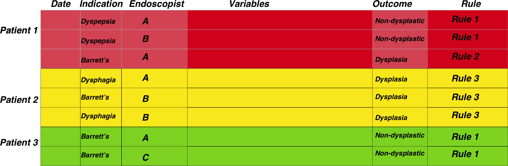

EndoMinerPrinciples
Sebastian Zeki
March 02, 2018
Introduction
The electronic recording of endoscopy data is now the norm. This gives us the opportunity to answer many practical day to day gastroenterology questions and opens the door to automated and reproducible audit and governance analyses using scripted analyses. Electronic endoscopic data can be organised in a manner that allows several questions to be answered with the same data structure across patient episodes. The structure itself is straightforward. It simply rests on the basis that we mainly describe patient episodes so that each row of a dataframe pertains to the data collected at that episode and the index of the row is based on a combination of date and a patient’s unique identifier. The following describes an overview of how data should be structured using both and endoscopic dataset and a pathological dataset which we will then merge.
Dataset assumptions

There are some basic assumptions we make about an endoscopic dataset so that processing can be straightforward. These assumptions are so generic and self-evident that they are likely to be true for all endoscopy datasets as well as many medical datasets in general.
Assumption 1 (Mandatory)- Data is episodic
A fundamental assumption is that all patient related data at the departmental level can be viewed as pertaining to a clinical episode recorded as a single timepoint (usually as the day of the episode). A single patient is related to patient timed episodes in a one to many relationship (one patient can have many endoscopies). In fact most medical data is recorded in real time in patient notes so that this patient-time centric data organisation is simply part of a normal intuitive medical workflow.
Assumption 2 (Mandatory)- Patients have unique identifiers
All patients have a unique identifier. At the departmental level this is likely to be a Trust specific hospital number.
Assumption 3 (Optional): Outcome variables are present
A patient episode should have an outcome. In the case of an endoscopy for example, the outcome may be the histopathological diagnosis, or if no biopsies were taken, then the endoscopic diagnosis. The origin of the outcome is not important: it can be a derivative of the dataset itself or can be from a distinct dataset merged into the current one depending on the analysis. What is important is that the outcome relates to the patient episode: if the biopsy result is the outcome it should be biopsies taken at the recorded endoscopy. In other words the outcome should be that which is related to the same timepoint as the event. To reiterate: the outcome can be derived from the dataset and so does not need to be present at the outset, but many analyses rely on some form of measurable outcome.
Assumption 4 (Optional): Tests should have an indication
A patient episode should have a reason. The indication for the patient episode should be recorded for the same time point as the episode. This is very commonly found in the report text of both an endoscopy and histopathology reports. This is optional as other analyses can still be carried out without this being available.
Assumption 5 (Optional): The data is semi-structured.
The data is semi-structured. Structured data is easier to analyse but because it is more cumbersome to input and often lacks flexibility, most endoscopic and histopathology data remains semi-structured. This means that although the text extraction techniques outlined here are the same, the boundaries for extracting each section may differ. For example in our trust a pathology report may contain the subsections ‘Macroscopic specimen’ and ‘Diagnosis’ whereas these sections may have alternative labels in another hospital’s report.
Semi-structured data requires specific language processing techniques depending on what is being extracted. For our purposes the extractable data is likely to be either diagnoses or aspects of the test being performed. The diagnostic data is traditionally the most difficult to extract but this is often because the object to be extracted is from a large set eg. for the purposes of coding for financial remuneration. Because the target set is much smaller for endoscopic-pathological diagnoses, language extraction can be more focused whilst being more flexible to accommodate edge cases such as misspellings and plurals.
Assumption 6 (Mandatory): Dataset merging has to happen for the same patient episode
A huge part of endoscopy is tissue acquisition for further histopathological assessment. Because histopathology is kept in a separate dataset (and usually in a separate database altogether), merging endoscopic and pathology datasets becomes an important process. Pathology episodes are often recorded at a date the specimen was received in the lab which can be different to the date the patient was endoscoped. Understanding this is crucial to making sure the patient pathology and endoscopy episode is related.
Generic gastroenterology questions
Generic questions in gastroenterology are really applicable to most areas in medicine. Many fields share the same practical, day to day questions. The main questions are:
1. Surveillance
Surveillance programmes are ubiquitous in medicine and an essential part of preventive medicine.
The problem of surveillance from a data science point of view is that the timing of a subsequent investigation can be dependent on a previous investigation result. Sometimes the surveillance timing depends on other factors such as family history or date since the original diagnosis.
Regardless of the dependencies of surveillance timings, essentially surveillance relies on knowing the timing of a test and the test result along with other factors mentioned above
So essentially the problem is
** (Date of test)+(Test Result)+(Other external data)**
This then starts as a data merging problem. We can look at a fairly simple surveillance programme, namely Barrett’s surveillance. This is simple because the rules for the next endoscopy depend on the histopathological results of the previous endoscopy (the presence or absence of intestinal metaplasia) as well as the length of the Barrett’s segment, which should be recorded in the endoscopy report.
The second issue we must understand is that the date of the test combined unique patient ID is a combined index and that our data structure needs to be grouped by patientID and then arranged according to date before further processing is done.
So we need to merge the endoscopy and pathology reports for each patient and then we need to extract information from text.
The figure below demonstrates the general approach once the data has been merged. The patient episodes are organised by patientID and then secondarily arranged by date:

Therefore, once the data has been properly arranged we can then make an attempt at deciding when the patient should return for a subsequent investigation. This is the basis of the figure above where the Rule column is derived from other columns such as the endoscopy report and detection of dysplasia among other factors. It is only a small step from there to deciding who has missed surveillance, who is due, the number of patients going through the programme, forecasting capacity and a huge number of other tasks related to robust surveillance.
2. Between dataset quality- Diagnostic yields
We can in fact use the same structure of dataset to also analyse diagnostic yields meaning histopathology diagnoses from endoscopic samples). Again, the pathology and endoscopy datasets need to have been merged by patient ID and date.
Adenoma detection rates are a good example of this. This is a measure of how many endoscopies have resulted in the detection of at least one colonic polyp which is classifiable as an adenoma. This is often used as a measure of how robust an endoscopit is when performing colonoscopy. The steps needed to calculate endoscopist-level adenoma detections rates are:
1. Detect rows that mention polyps and in the endoscopy report, filtered by colonoscopy
2. Also detect rows that mention dysplasia in the pathology report.
3. Group by endoscopist.
4. Then get the total number of reports that mention polyps in the endoscopy report whether dyplasia is metioned or not, and group by endoscopist.
5. Calculate proportion by endoscopist then visualise it.
Using a similar dataset to that of surveillance, it is a fairly straightforward task:

3. Within dataset quality- Analysis of endoscopic and pathology quality
This section relates to the anaylsis of quality within datasets. THis is similar to many of the fields required in the global rating scale for endoscopy. The section above on yield can also be seen as a ‘between’ dataset quality measure as in the adenoma detection rate, as oppose to the ‘within’ dataset quality discussed here.
Endoscopic quality relates to many things such as the amount of sedation given, the quality of the documentation amongst others. Pathology quality relates often to whether certain aspects are mentoned in the report such as depth of invasion of a cancer, or a particular scoring system.
Each of these is discussed in more detail in the documentation but at a generic level,the dataset we have already described is sufficient to allow the extraction of such detail as it comes directly from the fields already present, often without needing to cross reference with other fields.
4. Analysis of patient flow
Gastroenterology departments are often concerned with population level problems such as patient flow: How many patients will need colonoscopy this year? What proportion of patients need several investigations for a specific symptom and can this be made more efficient? etc.
If we understand the fact that patient’s flow through a system, and the way to characterise that flow is by organising data according to the patient’s unique identifier and episode date as a combined index, then there are a huge number of questions that can be answered under this generic question. Such questions rely on the same organisation of data as the first figure, namely data organised by patient and date and sorted by date. Again this is discussed further in the relevant documents:
To summarise, the data structure needed to answer most gastroenterology questions is as follows:

The central datastructure is the same for all the 4 generic practical questions we ask in gastroenterology, it is only the comparisons that differ. This central datastructure therefore allows data preparation to be much more straightforward for the end user.